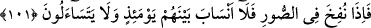

101. Sûra üflendiği zaman artık aralarında akrabalık bağları kalmamıştır;
birbirlerini de arayıp sormazlar.
Kıyâmetin kopması için “Sûra üflendiği zaman” Bu, ikinci üflemedir. Sûra ikinci
defa üflendiğinde yeniden diriltilme ve kabirden çıkma meydana gelir. Sûr, kendisine
üflenen boynuz gibi bir şeydir. Allah onu ruhların cesedlerine dönmesine sebep
kılmıştır.
“Artık aralarında” bugün aralarında olduğu gibi kendilerine fayda verecek
“akrabalık bağları kalmamıştır.” Çünkü aşırı şaşkınlıktan ve kendilerini dehşetin
kaplamasından dolayı birbirlerine merhametleri ve şefkatleri ortadan kalkar. Öyle ki
kişi kardeşinden, annesinden, babasından, eşinden ve oğullarından kaçar (bk. Abese,
80/34-36). Ya da onların kendisiyle övünecekleri akrabalık bağları kalmaz.
Neseb, iki ve daha fazla kimse arasında yakınlık/akrabalık, yâni ebeveynden birisi
cihetinden ortaklık demektir. Bu ise iki türlüdür: Babalarla oğullar arasındaki ortaklık
gibi boyuna olan neseb, kardeşler ve amca oğulları arasındaki neseb gibi enine olan
neseb.
“Birbirlerini de arayıp sormazlar.” Yâni onların bâzısı bâzısını sormaz. Ona: “Sen
kimsin? Hangi kabileden ve soydansın?” ve benzeri sözler söylemez. Çünkü herkes
korkunun artıklığı yüzünden kendisi ile meşguldür. Birbirlerini tanımazlar ve
birbirlerini arayıp sormazlar. Nitekim dünyada da iş büyüyünce baba çocuğunu tanımaz
olur. “İşte o zaman, birbirlerine dönerek soracaklar.” (es-Sâffât, 37/50) âyeti buna
ters düşmez. Çünkü onların birbirlerini arayıp sormamaları hesaba çekilmeden önce
ikinci defa sûra üfürülmesinin başlangıcındadır. Birbirlerini arayıp sormaları bundan
sonradır. Yine kıyamet günü uzun bir gündür. O günde elli konak vardır. Her konak bin
yıldır. Bir konakta birbirlerini arayıp sormaktan ve tanımaktan alıkoyacak kadar onların
üzerinde korku ve endişe artar da onun farkında bile olamazlar. Başka bir konakta ise
kendilerine gelirler, birbirlerini arayıp sorarlar ve tanırlar.
Şa‘bî’den rivâyet edildiğine göre Âişe (r.anhâ): “Ey Allah’ın Rasûlü, kıyâmet günü
birbirimizi tanıyacak mıyız? İşitiyorum ki Allah “Sûra üflendiği zaman artık
aralarında akrabalık bağları kalmamıştır; birbirlerini de arayıp sormazlar.”
buyuruyor.” dedi. Efendimiz (a.s.):
“Üç konak vardır ki onlarda her nefis kendinden geçer. Her insana amel defteri
verildiği zaman, mizanlar kurulduğu zaman ve cehennem köprüsünün (sırat)
üzerinde.” buyurdu.[102]
İbn Mes‘ûd (r.a.) şöyle demiştir: “Kıyamet gününde kadın ve erkek kulun elinden
tutulur. Önceki ve sonrakilerin gözü önüne dikilir. Sonra bir münâdî “Bilesiniz ki bu
filan oğlu filandır. Kimin onda hakkı varsa gelip hakkını alsın.” diye seslenir. Kul, o